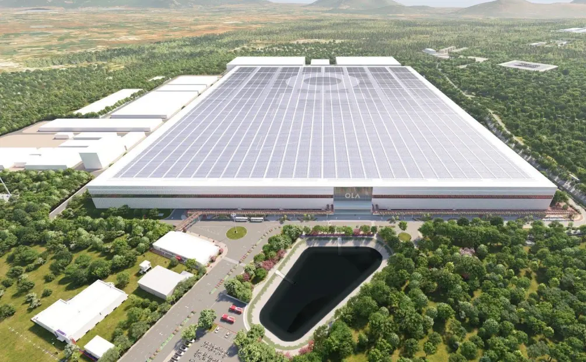
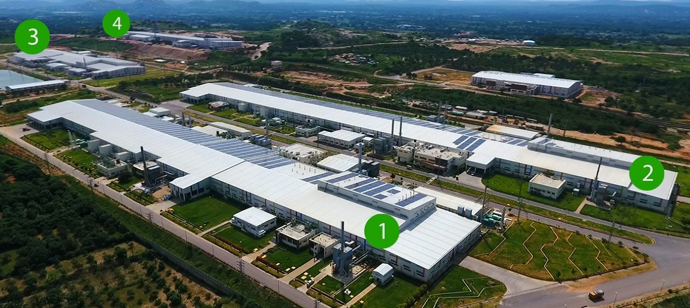
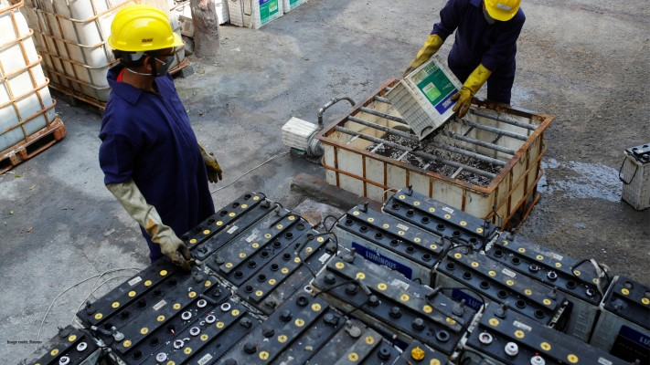
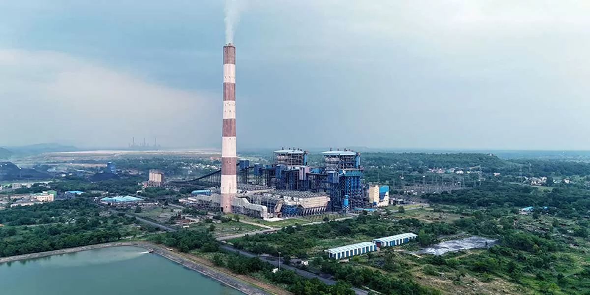
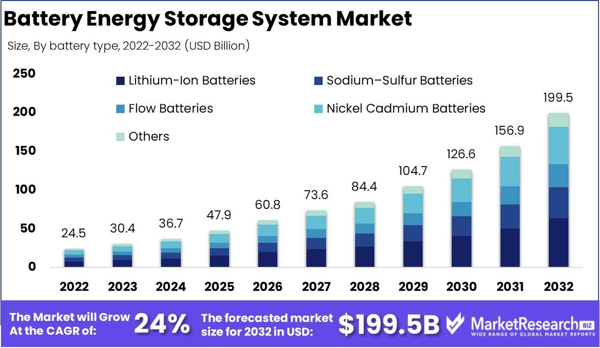
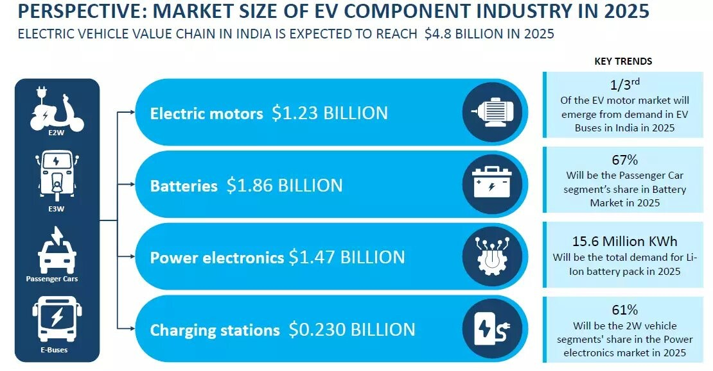

India is at a pivotal juncture in the evolution of its battery industry, which is vital to the nation’s transition toward sustainable energy solutions and electric mobility. With the government's commitment to boosting local manufacturing under the Make In India initiative and ambitious goals set for 2030, 2024 has seen accelerated development across the sector. Here’s an in-depth look at key achievements in 2024 and the roadmap for 2025.
Progress and Highlights in 2024
1. Gigafactory Investments
India has made significant progress in scaling up battery production capacities, aligning with its Production-Linked Incentive (PLI) scheme for advanced chemistry cell (ACC) batteries. The scheme, introduced to promote domestic battery manufacturing, has attracted leading Indian and global companies.
By 2024, India is on track to meet its near-term target of 25 GWh battery production capacity by 2025, with a long-term vision of achieving 50 GWh by 2030. These facilities will primarily cater to the growing demands of the electric vehicle (EV) sector, energy storage systems (ESS), and consumer electronics.
Top 7 Lithium-ion Battery Giga factories In India
- Ola Electric GIGA Factory is a massive manufacturing facility located in Krishnagiri, Tamil Nadu, India. Ola Electric, one of India’s largest electric 2-wheeler manufacturers, built a Gigafactory that can produce 100 GWh of Li-ion cell manufacturing. Its initial capacity was 5 GWh, but it is now fully operational.
The 115-acre site of this Gigafactory can be found in Krishnagar, Tamil Nadu.
The plant intends to produce all the battery manufacturing supply chain components to reduce reliance on battery supplies abroad.

- Powerzone Batteries By AMARA RAJA Batteries Ltd. has recently inaugurated the most extensive Gigafactory in Telangana, with a projected investment of Rs 9,500 crore over the forthcoming decade. The establishment shall produce lithium-ion batteries with a maximum capacity of 16 GWh for lithium cells and 5 GWh for battery packs.
- Exide Industries Limited , a leading battery manufacturer, is set to invest Rs 6,000 crore in establishing a state-of-the-art Lithium-ion cell manufacturing factory in Karnataka.
The proposed Gigafactory will utilize advanced cell chemistry (ACC) technology tailored to meet the diverse requirements of the electric vehicle (EV) and industrial segments. This significant development in the EV field showcases Exide’s commitment to driving innovation and supporting the Indian market’s growing demand for sustainable energy solutions.

As part of its ambitious plans, Exide will collaborate with SVOLT Energy Technology, a renowned Chinese storage battery firm, for localized manufacturing in India.
- In Gujarat’s Dholera Special Investment Region, the Tata Group , parent company of Tata Motors, has committed a sizeable investment of 4,000 crores to construct a lithium-ion battery plant. The project, which aims to have a production capacity of 10 GWh, will be carried out in stages with an initial investment of 25% of the desired sum. Dholera was chosen because of its advantageous characteristics, including its easy access to land with clear ownership and affordable electricity rates.
- Lucas TVS and 24M Technologies have collaborated to establish a pioneering GIGA factory in India, focusing on developing next-generation lithium-ion batteries based on their partner’s state-of-the-art semisolid platform technology.
- GODI India, with its headquarters in Hyderabad operations, has recently announced its intention to construct a gigafactory exclusively dedicated to manufacturing lithium-ion cells for electric vehicles. It is noteworthy that Godi India has become the inaugural company in India to secure certification from the Bureau of Indian Standards (BIS) for its lithium-ion cells, which were created utilizing native technology.
- Cygni Energy is embarking on a groundbreaking venture in Telangana by establishing a cutting-edge Gigafactory. With an impressive capacity of 1,200 MWh, this facility is poised to produce approximately 400,000 battery packs annually.
2. Policy and R&D Initiatives
The Indian government is fostering innovation and local production of critical battery components. Key initiatives include:
- Development of lithium-ferro phosphate (LFP) cathodes, synthetic anodes, and advanced electrolytes to reduce reliance on imported materials.
- Research and development (R&D) efforts in alternative battery chemistries, such as sodium-ion and solid-state batteries, which promise cost-effectiveness and enhanced safety.
These policies not only aim to boost self-reliance but also align with India's climate goals by supporting low-carbon manufacturing processes.
3. Sustainability and Recycling
Battery recycling is emerging as a cornerstone of India’s sustainability drive. Companies like Attero Recycling have taken the lead in creating a circular economy, reducing electronic waste, and mitigating greenhouse gas emissions. Efforts are underway to improve the collection and recycling efficiency of end-of-life batteries, ensuring resource recovery and reducing dependency on raw material imports.

4. Entry of New Players
Major industrial players are entering the battery manufacturing sector to meet the rising demand. For instance:
- Jindal India Renewable Energy plans to build a 1 GWh lithium battery pack assembly line by 2025 and aims for a 5 GWh production capacity by 2027. Their entry marks a shift toward integrating energy storage solutions with renewable energy.

5. Supply Chain Resilience
Recognizing the risks of import dependency, India is diversifying its supply chain. The government is pursuing partnerships with allies to acquire critical machinery and reduce dependence on China for key manufacturing equipment. These collaborations will also focus on developing domestic expertise and enhancing cost competitiveness.
Plans and Goals for 2025
1. Expanding Domestic Capacity
India aims to close the gap between domestic battery demand and supply by accelerating Gigafactory operations. Companies leveraging the PLI scheme are expected to play a crucial role in scaling production.
2. Boosting EV Penetration
The Indian government’s vision to have 30% EV penetration by 2030 hinges on affordable, efficient, and sustainable battery solutions. Ensuring local production of batteries will lower costs and enhance accessibility for Indian consumers.
3. Enhancing Energy Storage Integration
Battery Energy Storage Systems (BESS) are becoming essential for stabilizing India’s renewable energy grid. By 2032, the BESS market is projected to grow at a compound annual growth rate (CAGR) of 11.41%, underscoring its critical role in grid resilience and renewable energy integration.

4. Innovations in Chemistry
India is focusing on next-generation battery chemistries to address raw material scarcity:
- Sodium-ion batteries: A promising alternative to lithium-ion, these batteries are cost-effective and better suited to India’s climatic conditions.
- Solid-state batteries: These batteries are seen as the future of energy storage due to their higher safety and energy density.
5. Export Opportunities
India is positioning itself as a global hub for battery exports, leveraging its advancements in Environmental, Social, and Governance (ESG) compliance. With increasing global demand for energy storage, Indian manufacturers aim to capture significant export markets.

Challenges to Overcome
- Supply Chain Bottlenecks: Dependence on imported machinery and equipment remains a challenge for scaling production. Strategic global partnerships and domestic technology development are crucial to address this.
- Raw Material Dependency: The lack of domestic reserves for critical minerals like lithium, cobalt, and nickel makes India reliant on imports. Efforts are ongoing to establish trade agreements with resource-rich nations.
Conclusion
India’s battery industry is evolving rapidly, driven by strong government support, private sector investments, and a focus on sustainability and innovation. The year 2025 will mark a turning point as India expands its production capacity, fosters innovation, and addresses key challenges to build a self-reliant and export-oriented battery manufacturing ecosystem.
With clear policies, robust investments, and global collaborations, India is on the path to becoming a global leader in battery technology, contributing significantly to its EV goals and the global energy transition.